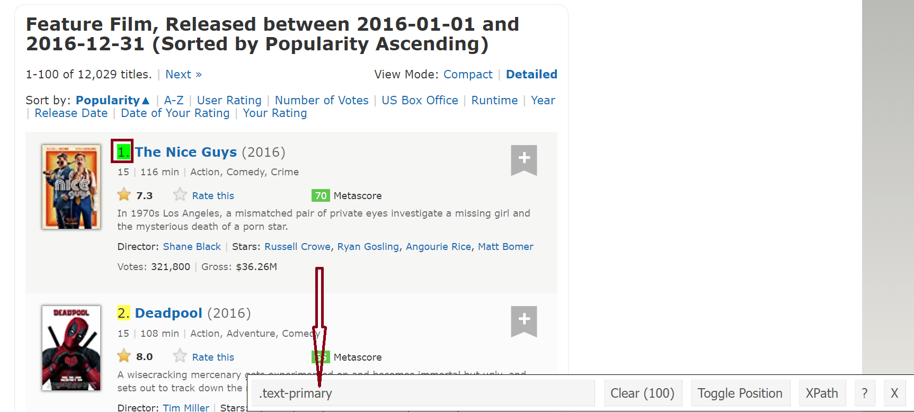
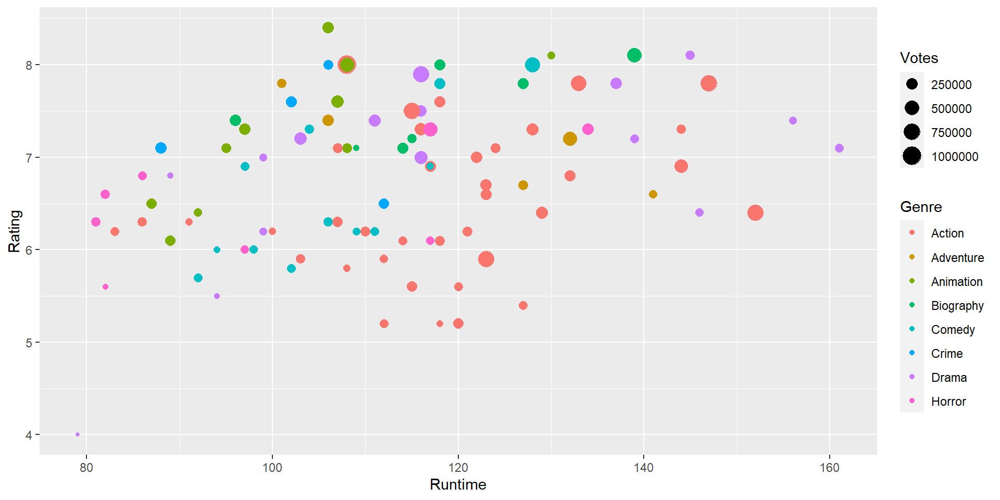
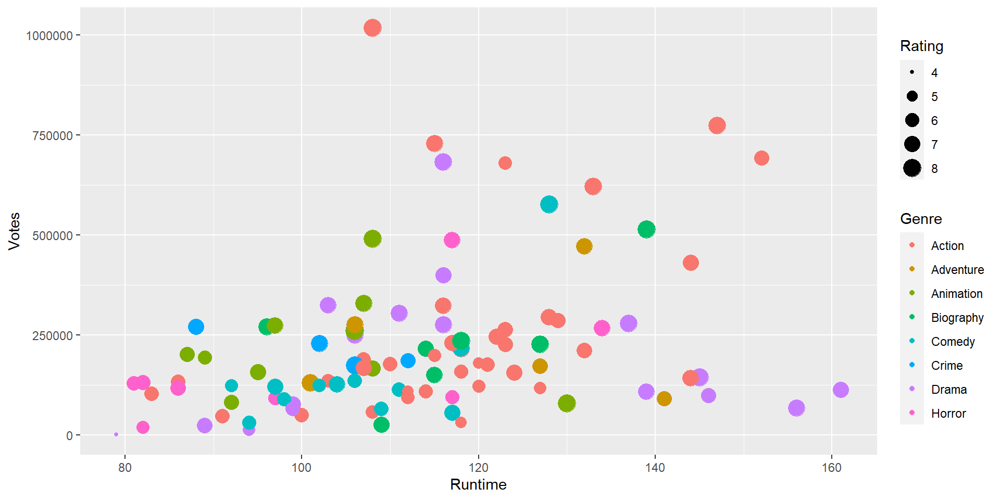
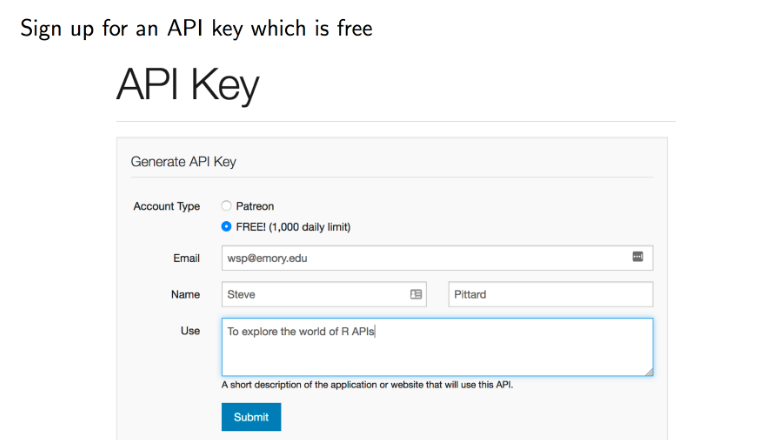

Web Scraping using R
Prof. P. Wijekoon
Department of Statistics and Computer Science
Data Scientists need the skill to get the right data for the problem that they want to solve.
In many practical situations, an already prepared database may not exist, and they may have to pull data from the right sources.
For this purpose, Web Scraping and APIs are used.
Although many websites contain some important data, the users cannot download them directly.
Most of these websites don’t provide APIs, and one way to get this data is to manually copy and paste, which is a tedious and time-consuming method.
Instead, web-scraping can be done, which is an automatic process of data extraction from websites.
Using web-scraping one can convert the data that present in unstructured format (HTML tags) over the web to the structured format which can easily be accessed and used.
Web Scraping is done with the help of software called web scrapers.
They automatically load and extract data from the websites based on user requirements.
A web page may have text, images, links etc., and the main languages used to build web pages are called Hypertext Markup Language (HTML), Cascasing Style Sheets (CSS) and Javascript.
A knowledge of HTML and CSS will be an added advantage for web-scraping.
To view the underline codes on a web page in Chrome, simply click Ctrl+Shift+C in Windows which opens up the Elements console.
However, if you don’t have the technical knowledge of HTML and CSS, install the Chrome Extension of Selector Gadget (https://selectorgadget.com/) software.
Using this Chrome extension, you can select the necessary HTML and CSS tags to perform Web scraping
The 100 most popular feature films released in 2016 are given in IMDb website (https://www.imdb.com/search/title/?count=100&release_date=2016,2016&title_type=feature). To scrape the data in this site, we use the commonly used web Scraping package in R, i.e. rvest, which is one of the tidyverse packages introduced by Hadley Wickham.
First, we scrape the rank of the film which are given from 1 to 100 as in 2016 list.
Click the selector gadget Chrome extension, and then click the rankings field. Then, copy the corresponding CSS selector shown in box at the bottom. In this case, it is .text-primary. 
Now, we use this CSS selector to get all the rankings as below:
rank <- html_nodes(webpage,'.text-primary')
#Convert the ranks to text
rank_dat <- html_text(rank)
head(rank_dat)[1] "1." "2." "3." "4." "5." "6."[1] 1 2 3 4 5 6Try to scrape the title, description, runtime, genre, IMDb ratings, votes, director, and actor of the films.
[1] "\nIn 1970s Los Angeles, a mismatched pair of private eyes investigate a missing girl and the mysterious death of a porn star."
[2] "\nA wisecracking mercenary gets experimented on and becomes immortal but ugly, and sets out to track down the man who ruined his looks."
[3] "\nA woman is hired as a handmaiden to a Japanese heiress, but secretly she is involved in a plot to defraud her."
[4] "\nA secret government agency recruits some of the most dangerous incarcerated super-villains to form a defensive task force. Their first mission: save the world from the apocalypse."
[5] "\nThe crew of the USS Enterprise explores the furthest reaches of uncharted space, where they encounter a new ruthless enemy, who puts them, and everything the Federation stands for, to the test."
[6] "\nIn a time of conflict, a group of unlikely heroes band together on a mission to steal the plans to the Death Star, the Empire's ultimate weapon of destruction." [1] In 1970s Los Angeles, a mismatched pair of private eyes investigate a missing girl and the mysterious death of a porn star.
[2] A wisecracking mercenary gets experimented on and becomes immortal but ugly, and sets out to track down the man who ruined his looks.
[3] A woman is hired as a handmaiden to a Japanese heiress, but secretly she is involved in a plot to defraud her.
[4] A secret government agency recruits some of the most dangerous incarcerated super-villains to form a defensive task force. Their first mission: save the world from the apocalypse.
[5] The crew of the USS Enterprise explores the furthest reaches of uncharted space, where they encounter a new ruthless enemy, who puts them, and everything the Federation stands for, to the test.
[6] In a time of conflict, a group of unlikely heroes band together on a mission to steal the plans to the Death Star, the Empire's ultimate weapon of destruction.
100 Levels: A boy seeks the help of a tree monster to cope with his single mother's terminal illness. ...[1] "\nAction, Comedy, Crime "
[2] "\nAction, Adventure, Comedy "
[3] "\nDrama, Romance, Thriller "
[4] "\nAction, Adventure, Fantasy "
[5] "\nAction, Adventure, Sci-Fi "
[6] "\nAction, Adventure, Sci-Fi " #removing \n
genr_dat<-gsub("\n","",genr_dat)
#removing excess spaces
genr_dat<-gsub(" ","",genr_dat)
#taking only the first genre of each movie
genr_dat<-gsub(",.*","",genr_dat)
genr_dat <-as.factor(genr_dat)
head(genr_dat)[1] Action Action Drama Action Action Action
Levels: Action Adventure Animation Biography Comedy Crime Drama Horrorvote <- html_nodes(webpage,'.sort-num_votes-visible span:nth-child(2)')
vote_dat <- html_text(vote)
head(vote_dat)[1] "322,310" "1,017,435" "143,594" "679,435" "245,423" "620,251" #remove commas and convert to numeric
vote_dat<-gsub(",","",vote_dat)
vote_dat<- as.numeric(vote_dat)
head(vote_dat)[1] 322310 1017435 143594 679435 245423 620251films<-data.frame(Rank = rank_dat, Title = title_dat,Description = decs_dat, Runtime = runt_dat,Genre = genr_dat, Rating = rate_dat,
Votes = vote_dat, Director = direc_dat, Actor = act_dat)
str(films)'data.frame': 100 obs. of 9 variables:
$ Rank : num 1 2 3 4 5 6 7 8 9 10 ...
$ Title : Factor w/ 100 levels "10 Cloverfield Lane",..: 92 22 5 71 70 65 47 34 25 61 ...
$ Description: Factor w/ 100 levels "A boy seeks the help of a tree monster to cope with his single mother's terminal illness.",..: 61 24 25 20 84 66 98 100 99 23 ...
$ Runtime : num 116 108 145 123 122 133 128 139 115 116 ...
$ Genre : Factor w/ 8 levels "Action","Adventure",..: 1 1 7 1 1 1 5 4 1 7 ...
$ Rating : num 7.3 8 8.1 5.9 7 7.8 8 8.1 7.5 7.5 ...
$ Votes : num 322310 1017435 143594 679435 245423 ...
$ Director : Factor w/ 98 levels "Alessandro Carloni",..: 85 91 73 22 51 32 16 61 84 93 ...
$ Actor : Factor w/ 91 levels "Aamir Khan","Alexander Skarsgård",..: 73 75 52 90 18 31 74 4 8 3 ...Draw a histogram to show the Runtime according to the variable Genre using ggplot2.
Draw a scatter plot to identify the Genre having the longest runtime.
Draw a scatter plot to identify the genre which has the highest votes within the Runtime of 130-160 mins.
Draw a histogram to show the Runtime according to the variable Genre using ggplot2.
Draw a scatter plot to identify the Genre having the longest runtime.
Draw a scatter plot to identify the genre which has the highest votes within the Runtime of 130-160 mins.
An API is a set of methods and tools that allows to query and retrieve data dynamically.
Some companies provide free APIs to access the information they stored in their servers.
For example, Twitter, Facebook, Reddit, Spotify provide free APIs.
Here we use API of IMDB website (https://www.omdbapi.com/). First, sign up for an API key.
Then, you will get an API key to your email, and activate it.
Click on the API key. Then you find some information related to one movie which is a JSON formatted entry. To work with this format, install RJSONIO R package. You can access the data related to that movie by using the following codes with your API key.
library(RJSONIO)
movie1 <- fromJSON("http://www.omdbapi.com/?apikey=f7c004c&t=The+Godfather")
str(movie1)List of 25
$ Title : chr "The Godfather"
$ Year : chr "1972"
$ Rated : chr "R"
$ Released : chr "24 Mar 1972"
$ Runtime : chr "175 min"
$ Genre : chr "Crime, Drama"
$ Director : chr "Francis Ford Coppola"
$ Writer : chr "Mario Puzo, Francis Ford Coppola"
$ Actors : chr "Marlon Brando, Al Pacino, James Caan"
$ Plot : chr "The aging patriarch of an organized crime dynasty in postwar New York City transfers control of his clandestine"| __truncated__
$ Language : chr "English, Italian, Latin"
$ Country : chr "United States"
$ Awards : chr "Won 3 Oscars. 31 wins & 30 nominations total"
$ Poster : chr "https://m.media-amazon.com/images/M/MV5BM2MyNjYxNmUtYTAwNi00MTYxLWJmNWYtYzZlODY3ZTk3OTFlXkEyXkFqcGdeQXVyNzkwMjQ"| __truncated__
$ Ratings :List of 3
..$ : Named chr [1:2] "Internet Movie Database" "9.2/10"
.. ..- attr(*, "names")= chr [1:2] "Source" "Value"
..$ : Named chr [1:2] "Rotten Tomatoes" "97%"
.. ..- attr(*, "names")= chr [1:2] "Source" "Value"
..$ : Named chr [1:2] "Metacritic" "100/100"
.. ..- attr(*, "names")= chr [1:2] "Source" "Value"
$ Metascore : chr "100"
$ imdbRating: chr "9.2"
$ imdbVotes : chr "1,823,905"
$ imdbID : chr "tt0068646"
$ Type : chr "movie"
$ DVD : chr "11 May 2004"
$ BoxOffice : chr "$136,381,073"
$ Production: chr "N/A"
$ Website : chr "N/A"
$ Response : chr "True"Change the name of the movie, and get the relevant information.
library(RJSONIO)
movie2 <- fromJSON("http://www.omdbapi.com/?apikey=f7c004c&t=Suspiria")
str(movie2)List of 25
$ Title : chr "Suspiria"
$ Year : chr "1977"
$ Rated : chr "R"
$ Released : chr "12 Aug 1977"
$ Runtime : chr "92 min"
$ Genre : chr "Horror"
$ Director : chr "Dario Argento"
$ Writer : chr "Dario Argento, Daria Nicolodi, Thomas De Quincey"
$ Actors : chr "Jessica Harper, Stefania Casini, Flavio Bucci"
$ Plot : chr "An American newcomer to a prestigious German ballet academy comes to realize that the school is a front for som"| __truncated__
$ Language : chr "Italian, Russian, English, German, Latin"
$ Country : chr "Italy"
$ Awards : chr "1 win & 3 nominations"
$ Poster : chr "https://m.media-amazon.com/images/M/MV5BZGRjNjljOGEtZjFmMi00YzU1LWIxOWYtZTQzODMzNDQzMzY1XkEyXkFqcGdeQXVyNDE5MTU"| __truncated__
$ Ratings :List of 3
..$ : Named chr [1:2] "Internet Movie Database" "7.3/10"
.. ..- attr(*, "names")= chr [1:2] "Source" "Value"
..$ : Named chr [1:2] "Rotten Tomatoes" "93%"
.. ..- attr(*, "names")= chr [1:2] "Source" "Value"
..$ : Named chr [1:2] "Metacritic" "79/100"
.. ..- attr(*, "names")= chr [1:2] "Source" "Value"
$ Metascore : chr "79"
$ imdbRating: chr "7.3"
$ imdbVotes : chr "92,516"
$ imdbID : chr "tt0076786"
$ Type : chr "movie"
$ DVD : chr "25 Sep 2007"
$ BoxOffice : chr "N/A"
$ Production: chr "N/A"
$ Website : chr "N/A"
$ Response : chr "True"To get information easily from IMDB website, there is a new package called omdbapi, which can be downloaded from github as below:
devtools::install_github("hrbrmstr/omdbapi")
The functions related to this R package is given below:
find_by_id: To search IMDB ID
find_by_title: OMDB movie title search
get_actors: Get actors from an omdb movie
get_countries: Get countries from an omdb object
get_directors: Get directors from an omdb object
get_genres: Get genres from an omdb object
get_writers: Get writers from an omdb object
search_by_title: Lightweight OMDB title search
Find other details from here: https://github.com/hrbrmstr/omdbapi
For example, if you need to get the information related to Captain America use the following codes, and provide your API key when prompted.
Title Year imdbID Type
1 Captain America: The First Avenger 2011 tt0458339 movie
2 Captain America: The Winter Soldier 2014 tt1843866 movie
3 Captain America: Civil War 2016 tt3498820 movie
4 Captain America 1990 tt0103923 movie
5 Captain America 1979 tt0078937 movie
6 Captain America II: Death Too Soon 1979 tt0078938 movie
7 Iron Man and Captain America: Heroes United 2014 tt3911200 movie
8 Captain America 1944 tt0036697 movie
9 Captain America 1966 tt0206474 series
10 Captain America: Super Soldier 2011 tt1740721 game
Poster
1 https://m.media-amazon.com/images/M/MV5BMTYzOTc2NzU3N15BMl5BanBnXkFtZTcwNjY3MDE3NQ@@._V1_SX300.jpg
2 https://m.media-amazon.com/images/M/MV5BMzA2NDkwODAwM15BMl5BanBnXkFtZTgwODk5MTgzMTE@._V1_SX300.jpg
3 https://m.media-amazon.com/images/M/MV5BMjQ0MTgyNjAxMV5BMl5BanBnXkFtZTgwNjUzMDkyODE@._V1_SX300.jpg
4 https://m.media-amazon.com/images/M/MV5BYmRmYzA4NDItZmI3NS00NWIyLWIzZWEtNGIzZjZlYmY5MzE2XkEyXkFqcGdeQXVyMTEyNzgwMDUw._V1_SX300.jpg
5 https://m.media-amazon.com/images/M/MV5BZmFkZWE5ODYtNjVjNC00MWYwLWJlNTgtODRlMTcyMmQwM2IxXkEyXkFqcGdeQXVyMTYxNjkxOQ@@._V1_SX300.jpg
6 https://m.media-amazon.com/images/M/MV5BM2IwMWViYjAtODJhNy00MTEwLWExMzctZTUyODc4MTU4ZWY5XkEyXkFqcGdeQXVyMTEyNzgwMDUw._V1_SX300.jpg
7 https://m.media-amazon.com/images/M/MV5BMDIzMTIyYWEtYTAzZi00YzZjLTg5MGUtM2JiN2RjMDBjZmI3XkEyXkFqcGdeQXVyNjExODE1MDc@._V1_SX300.jpg
8 https://m.media-amazon.com/images/M/MV5BZjY4MjQ2MGMtYzNlMC00MGYwLWJlZjUtNjMxZWNhNDA5Y2UwXkEyXkFqcGdeQXVyNTc4Njg5MjA@._V1_SX300.jpg
9 https://m.media-amazon.com/images/M/MV5BMTM3NzE0NzU0N15BMl5BanBnXkFtZTcwNTAzMzYyMQ@@._V1_SX300.jpg
10 https://m.media-amazon.com/images/M/MV5BMTUwMzQ0NjE5N15BMl5BanBnXkFtZTgwODI3MzQxMTE@._V1_SX300.jpgA tutorial for getting APi from Twitter is given in this tutorial: https://cran.r-project.org/web/packages/rtweet/vignettes/auth.html
You have to install the rtweet and tidytext R packages to work with Twitter.
Many websites offer API. A big list can be found here: https://www.programmableweb.com/
The web site NY Times Best Sellers: Hardcover Fiction contains a list of best-selling fiction books. Scrape the names of these top books. The list of books are tagged via <h2>title</h2>.
Refer the tutorial https://www.earthdatascience.org/courses/earth-analytics/get-data-using-apis/use-twitter-api-r/ , and work with Twitter data.
Web Scraping: https://www.scrapingbee.com/blog/
Web Scraping with R: https://steviep42.github.io/webscraping/book/
Web Scraping in R: https://www.scraperapi.com/blog/web-scraping-with-r/
Introduction to Data scraping with R : https://stat2labs.sites.grinnell.edu/Handouts/rtutorials/IntroDataScraping.html
Facebook API: https://elfsight.com/blog/2020/10/how-to-get-and-use-facebook-api/
The twitter API in R : https://dgarcia-eu.github.io/SocialDataScience/2_SocialDynamics/027_rtweet/rtweet.html
Pulling tweets in to R: https://towardsdatascience.com/pulling-tweets-into-r-e17d4981cfe2
EarthLab Twitter data: https://www.earthdatascience.org/courses/earth-analytics/get-data-using-apis/use-twitter-api-r/
Accessing weather data: https://github.com/hrbrmstr/weatherkit